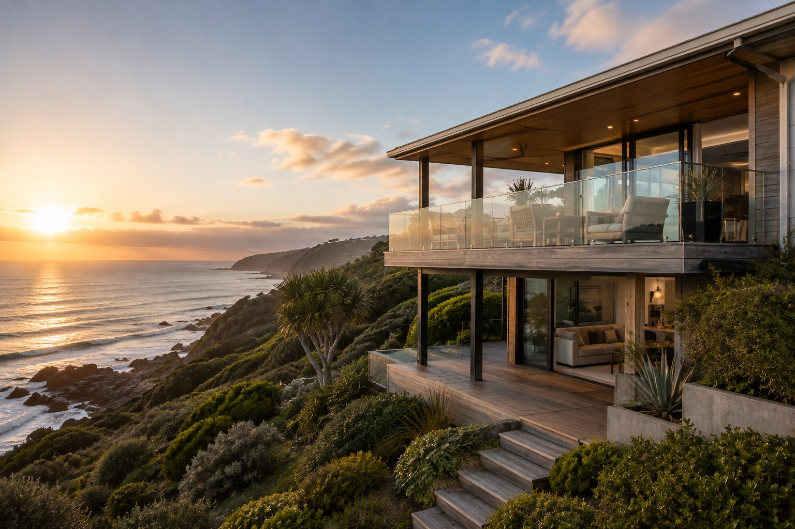
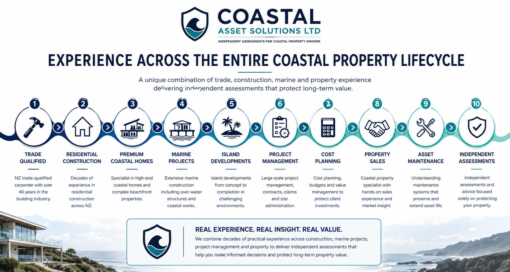
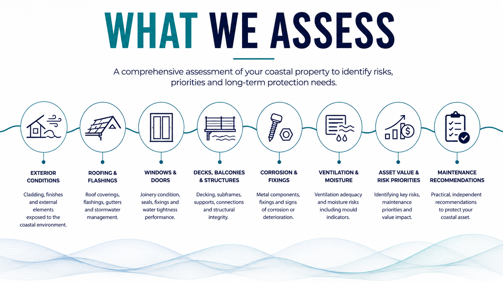
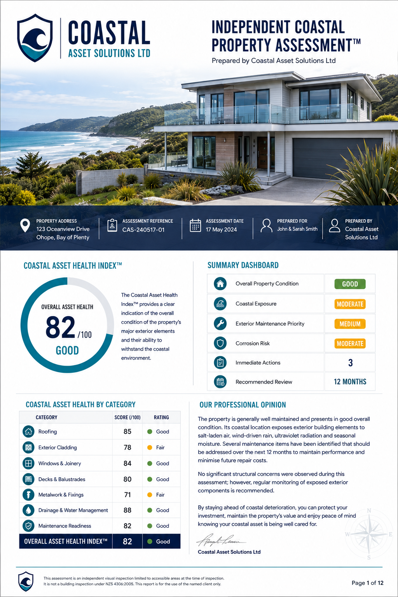
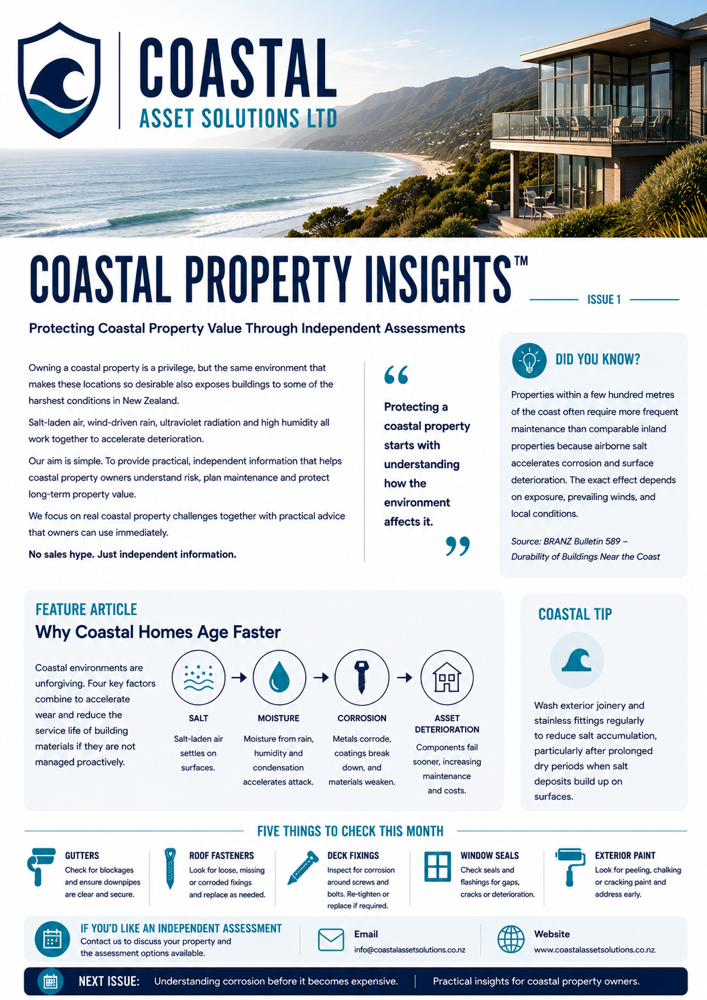
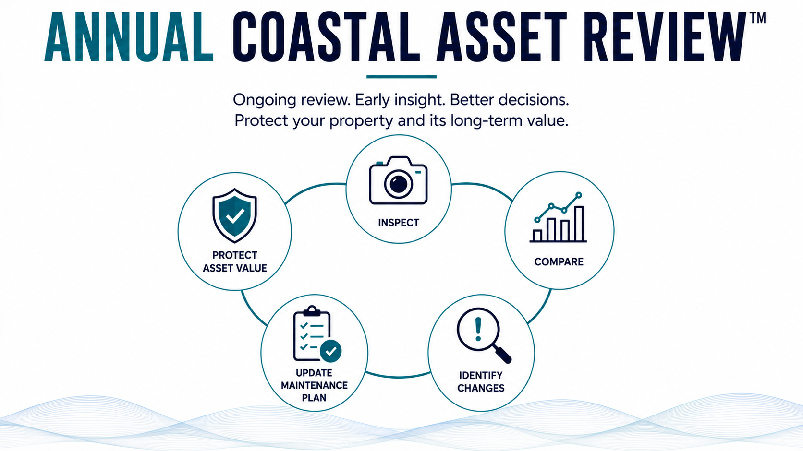
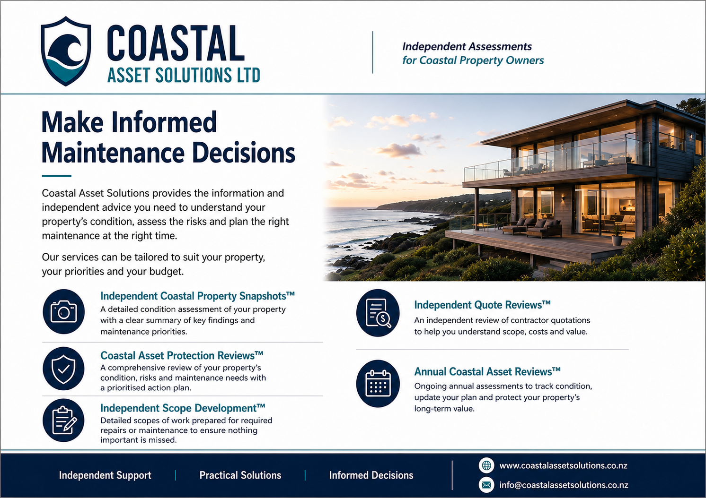

Independent coastal property assessments
Protecting coastal property value through better-informed decisions.
Independent assessments, maintenance planning and ongoing monitoring informed by experience across the entire coastal property lifecycle.
A different level of assessment
Not simply a builder who became an inspector.
Most professionals understand one part of property. Coastal Asset Solutions draws on practical experience in construction, exposed coastal environments, marine and resort projects, project management, cost control, property sales, maintenance and long-term asset management.


Why that breadth matters
Every observation is considered in the context of how the building was constructed, how coastal exposure changes performance, what maintenance should be prioritised and what the owner should do next.





Independent. Practical. Owner focused.
Protect your coastal property with a clearer understanding of condition, risk and maintenance priorities.
Send the property address or location, your contact details and a short description of what you would like assessed.